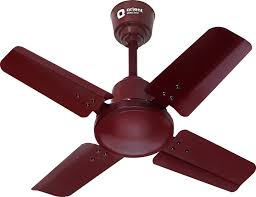
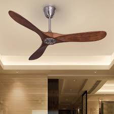
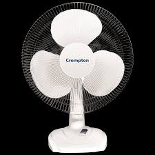
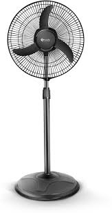

FAN

A device that creates a current of air by moving a surface or surfaces, often used for cooling.
Types of FANS
- Ceiling Fan

- Table Fan

- Pedestal Fan

- Wall-mounted Fan
- Tower Fan
- Box Fan
- Exhaust Fan
- Window Fan
- Bladeless Fan
- Misting Fan
- Oscillating Fan
- Floor Fan
- High-Velocity